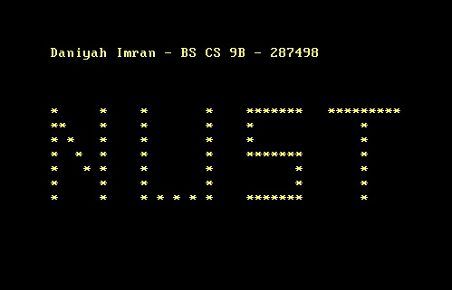

Required Softwares:
Commands Used:
- To build image: docker build buildenv -t myos-buildenv
- To enter the built image: docker run --rm -it -v "%cd%":/root/env myos-buildenv
- To build the x86-64 system: make build-x86_64
- To exit image: exit
- To run commands in 64-bit OS: qemu-system-x86_64 -cdrom dist/x86_64/kernel.iso
File Hierarchy
- Makefile
- buildenv
- src
- impl
- kernel
- x86_64
- intf
-
targets
-
x86_64
-
linker.ld
-
iso
- .gitignore
-
boot
-
grub
- impl
- kernel
- x86_64
- intf
-
x86_64
- linker.ld
-
iso
- .gitignore
-
boot
- grub
Explanation about each files:
1 - Docker File
As in previous task, we use thus file to create an image of Linux OS on our PC. We set the directory and give commands to install some basic software and assemblers to run the assembly code in this file. After creation of image, we run another command to get inside this image.
2 - Assembly files (.asm)
There are three .asm files in this version of the assignment. A basic header.asm which serves as a bootloader and allows appropriate locating of OS. This is a multiboot2 specification.
In the main.asmfile, we specify which bit system we want to create, by changing OS into long mode. This file acts as our link for entering the 64-bit Operating System. We also create a stack in this file and set its size by allocating memory, so that we can run commands which call multiple functions in the .c files. We split the code of this file into multiple subroutines, i.e functions in assembly. This file also sets up paging i.e creates virtual memory to hold data and run the commands in our new OS. We create a 4 level page table, each of standard size 512. To locate the page table entries we also set up a Global Descriptor Table, also of standard size.
In the main64.asm file, we specify which bit system we want to create. We change the bit to 64 and enable long mode. To make sure all commands run correctly, we load 0 or null into the data segment registers. This file acts as our link for entering the 64-bit Operating System.
3 - Header file (.h)
We use this header file as an interface for the .c files and initialize functions used in the .c files here. We also set up different colours, using enum data structure, for printing on the console later on. We use standard integer and standard deff header files to include macros in the .c files. We also use pragma once, which allows the main.c to be included only once in a single compilation
4 - C files (.c)
The main.c file function acts as our main function (as it has the kernel_main() function) which is called in the main.asm assembly program, which is run upon running the emulator on the OS. We create 3 main functions here, clear() to print a new line, a function to set colour and str() function to print any string we want on the screen.
The print.c file defines and contains the functions which were previously initialized in the print.h file. In this file, we use a complex design using videographics and video-memory. We also create a structure for each char, with an 8 bit ascii code specifying the character and another 8 bit number specifying what the colour of that particular character is to be. As we are printing on video memory, number of coloumns and rows are fixed and standard. We also create a buffer which tells us about all combinations of rows*coloumns of the screen. We then define new line, empty line and a normal print str() function.
5 - Linker file (.ld)
As the name implies, this file tells the computer how to link the OS together. We enter the OS from this linker file, using the multibook section header we used in our header.asm file. This is a multiboot2 specification.
6 - Makefile
This Makefile is used in correctly building the OS on our Linux Image. In the previos task, the Makefile compiled all .asm files to source files and then to object files but this has been changed to .c files. In this file, all .c files in our main OS folder are also compiled to object files. We also change directory of the file retreiving. We also use nasm which was installd when building the linux image, to run assembly commands. In this file, the iso file is created while building the x86_64 environment on our PC. This is done by using linker file and giving it the object files.
Output
